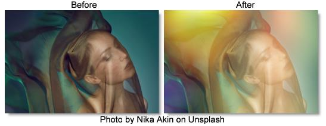

S_LightLeak
Description
Renders abstract patterns of color that simulate light leaking through gaps in a camera body. The light leak consists of three distinct elements which can be adjusted individually.
The S_LightLeak filter comes from the Emmy award winning Boris FX Sapphire filter set.
Category
Light.
Controls
Presets
To select a preset, pick one from the Presets window.
Scale Lights
Scales the light leak by this value. Increase for a brighter result.
Offset Darks
Adds this gray value to the darker regions of the result. This can be negative to increase contrast.
Color
The overall color of the light leak.
Hue Shift
Shifts the hue of the light leak in revolutions from red to green to blue to red.
Saturation
Scales the color saturation of the light leak. Increase for more intense colors. Set to 0 for a monochrome light leak.
Gamma
Increasing Gamma brightens the light leak and especially boosts the darker areas.
Shift X & Y
Shifts the position of all elements.
Seed
Used to initialize the random number generator. The actual seed value is not significant, but different seeds produce different results and the same value should give a repeatable result.
Bg Brightness
Scales the brightness of the image before combining it with the light leak. If 0, the result will contain only the light leak image over black.
Combine
Determines how the light leak is combined with the image.
Screen
The light leak is blended with the image using a function that helps prevent overly bright results.
Add
The light leak is added to the image.
Leaks Only
The light leak is shown on its own with no background.
Glow
Glow Brightness
Scales the brightness of the glow which is applied to the entire image after combining the light leak with the background.
Glow Width
The width of the glow. Increase for a softer glow and decrease for a sharper, brighter glow.
Glow Threshold
Parts of the image that are brighter than this value get glowed.
Element1-3 Enable
Turns these elements on and off.
Element1-3
Size1-3
Adjusts the size.
Rel Height1-3
Scales the vertical dimension making it elliptical instead of circular.
Brightness1-3
Scales the brightness.
Angle1-3
The angle of this element's path across the screen. The element moves along a line at this angle, passing through the center position at the midpoint of the image.
Outer Color1-3
The color at the outer edge.
Mid Color1-3
The color at the midpoint, between the Outer and Center Colors. The exact location depends on the Midpoint parameter.
Center Color1-3
The color at the center.
Midpoint1-3
Moves the location of the Mid Color between the center and outer edge of the element. Set to 0 to place the Mid Color at the center, or 1 to place it at the edge.
Softness1-3
Blurs the color gradient. Increase for a smoother gradient or decrease for sharper bands of color.
Noise Amp1-3
The amount of noise applied.
Noise Freq1-3
The frequency of the noise applied. Increase for smaller blobs or decrease for larger ones.
Noise Freq Rel Y1-3
The relative vertical frequency of the noise pattern. Increase to flatten the noise or decrease to stretch it out vertically.
Noise Detail1-3
Controls the amount of fine detail in the noise simulation. Decrease to get smoother noise or increase for a more crunchy, grainy look.